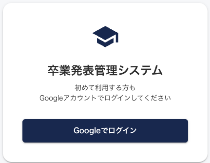
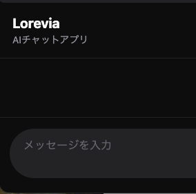
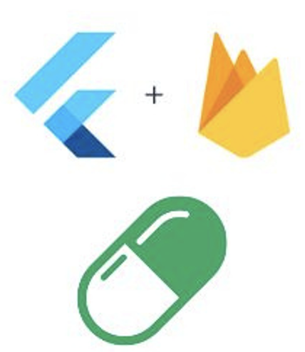

卒業発表管理システム
卒業研究では、卒業論文の発表情報を一元管理できるWebアプリケーションを開発しています。
React、TypeScript、Supabaseを用いて、Google認証、発表情報の検索・登録・編集、Markdown形式での概要作成などの機能を実装しています。
また、学生・教員・管理者ごとに権限を設定し、安全かつ効率的に発表情報を管理・共有できるシステムを目指しています。
[GitHub]

Lorevia
Loreviaは、ユーザーが設定した世界観やプロット、キャラクター設定をもとに、AIと会話しながら物語を展開できるチャット型Webアプリです。
React・TypeScript・Tailwind CSSでUIを構築し、SupabaseによるGoogle認証とOpenAI APIによる会話生成を実装しています。
開発ではChatGPTのサンプルコードも参考にしつつ、処理内容を確認・修正しながら、自身の構成に合わせて実装しました。
[GitHub]

発表資料 FlutterとFirebaseを使用し、服薬者の飲み忘れを防止する服薬管理アプリを開発しました。設定した服薬時刻に通知を送信し、服薬が確認できない場合は再通知を行い、それでも未服薬の場合は見守り者へ通知する仕組みを実装しました。 また、服薬履歴の記録やチャット機能を備え、服薬者と見守り者が連携して服薬状況を管理できるようにしました。 [GitHub]
大学から依頼されて初めて制作したWebサイト。
様々な難所があったものの、教授や後輩のサポートがあり、制作することができました。
[GitHub]